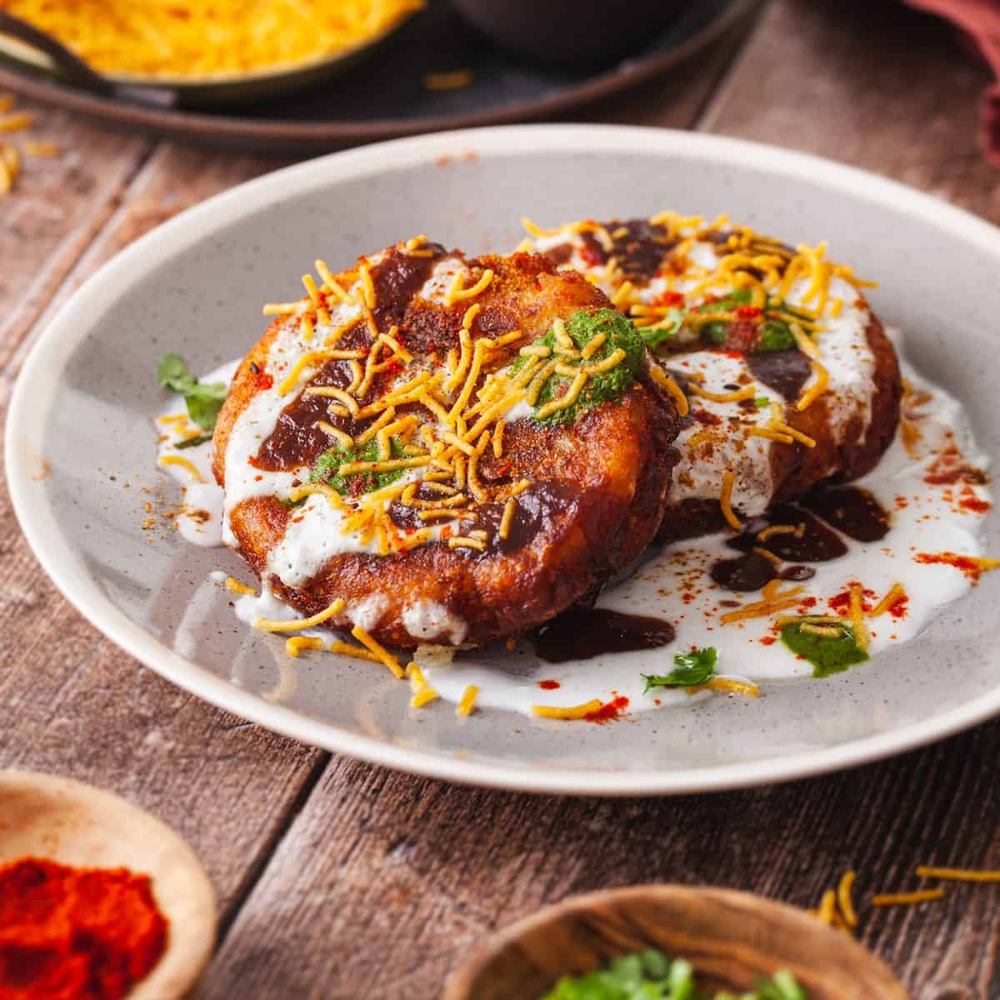

Aloo Tikki Chaat Recipe
Ingredients
- For the chana stuffing:
- 2 tbsp oil
- 1 tsp cumin
- Pinch of hing
- 4 chillies, finely chopped
- 1 inch ginger, finely chopped
- 2 tbsp cashew, chopped
- ½ tsp turmeric
- ½ tsp chilli powder
- 1 tsp coriander cumin powder
- 1 tsp amchur
- ½ tsp salt
- 1 cup chana dal, boiled
- 2 tbsp coriander, finely chopped
- For the aloo covering:
- 3 potatoes, boiled & mashed
- ½ tsp salt
- ½ tsp pepper powder
- 2 tbsp coriander, finely chopped
- 2 tbsp corn flour
- Oil, for frying
- For the chaat:
- Curd
- Green chutney
- Tamarind chutney
- Chaat masala
- Coriander
- Sev (optional)
Instructions
- For the chana stuffing:
- Heat 2 tbsp oil in a pan. Add 1 tsp cumin, pinch hing, 4 chillies, and 1 inch ginger, and sauté until aromatic.
- Add 2 tbsp cashew and roast until crunchy.
- Add ½ tsp turmeric, ½ tsp chilli powder, 1 tsp coriander cumin powder, 1 tsp amchur, and ½ tsp salt. Sauté until aromatic.
- Add 1 cup boiled chana dal and mix well. Mash slightly and add 2 tbsp coriander. Mix well and set aside.
- For the aloo covering:
- In a large bowl, mix 3 mashed potatoes, ½ tsp salt, ½ tsp pepper powder, 2 tbsp coriander, and 2 tbsp corn flour.
- To make the tikki, grease your hands with oil and pinch a ball-sized dough. Flatten slightly, stuff with a portion of prepared aloo stuffing, and seal.
- Flatten slightly to shape into a tikki. Fry in hot oil until golden brown and crispy on both sides.
Ratings and Reviews
Average rating: 0/5